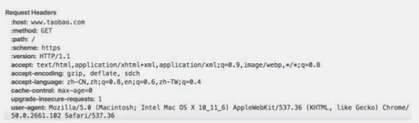
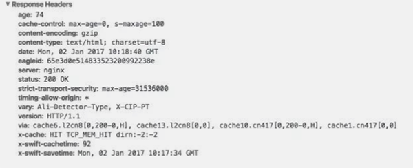
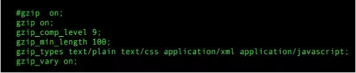
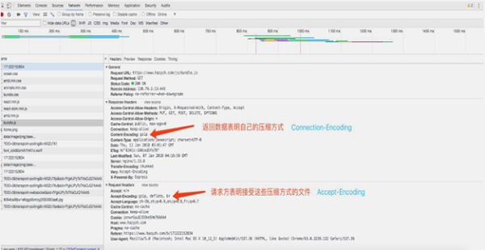

前端工程师做出的某些决定可以显著的减少 HTTP 请求以及响应的网络传输时间。终端用 户的带宽速度，网络服务提供商，距网络交换节点的距离这些因素都不受开发团队的控 制。但是仍有其它的因素会影响响应时间。比如，通过压缩 HTTP 响应来减少响应时间。
从 HTTP/1.1 开始，web 客户端就开始支持 HTTP 请求的 Accept-Encoding header。 Accept-Encoding: gzip, deflate
如果 web 服务器在请求中看到这种 header,它就会用客户端列出来的方法来压缩响应内 容。web 服务器通过响应中的 Content-Encoding header 通知 web 客户端。Content-Encoding: gzip
Gzip 是目前最流行以及最有效的压缩方法。其它你有可能看到的压缩格式是 deflate,但 是它不是很流行以及很有效。
Gzip 通常可以把响应内容大小减少 70%。目前浏览器当中接近 90%的网络流量支持 gzip。
对于浏览器以及代理来说还有一个已知问题就是浏览器期望的内容和它获取的压缩内容可 能不匹 配。幸运的是，这种情况随着旧版浏览器的使用率越来越低会越来越少。Apache 模块通过添加适 当的不同响应头来解决这个问题。
服务端选择用 Gzip 压缩内容主要依赖于文件类型，但是通常也受限于要决定压缩的内 容。大部分 web 站点用 gzip 压缩 html 文档。当然也值的压缩脚本以及样式文件，但是很 多网站 都没有选择这么做。事实上，可以用 gzip 压缩任何文本响应内容，包括 XML 和 JSON。Image 和 PDF 不建议 gzip 压缩，因为它们都是被压缩过的。试图压缩它们不仅浪 费 CPU 也有可能会增加文 件大小。
用 gzip 压缩尽可能多的文件类型是减少页面大小提升用户体验的一种简单方法。
下面来深入的了解一下 gzip。
gZip
gzip 是 GNUzip 的缩写，最早用于 UNIX 系统的文件压缩。HTTP 协议上的 gzip 编码是一种 用来改进 web 应用程序性能的技术，web 服务器和客户端（浏览器）必须共同支持 gzip。 目前主流的浏览器，Chrome,firefox,IE 等都支持该协议。常见的服务器如 Apache， Nginx，IIS 同样支持 gzip。
gzip 压缩比率在 3 到 10 倍左右，可以大大节省服务器的网络带宽。而在实际应用中，并 不是对所有文件进行压缩，通常只是压缩静态文件。
1)浏览器请求 url，并在 request header 中设置属性 accept-encoding:gzip。表明浏览 器支持 gzip。
2)服务器收到浏览器发送的请求之后，判断浏览器是否支持 gzip，如果支持 gzip，则向 浏览器传送压缩过的内容，不支持则向浏览器发送未经压缩的内容。一般情况下，浏览器 和服务器都支持 gzip，response headers 返回包含 content-encoding:gzip。
3)浏览器接收到服务器的响应之后判断内容是否被压缩，如果被压缩则解压缩显示页面内 容。
下面以淘宝为例，验证一下开启 gzip 的效果。客户端（浏览器）请求 http://www.taobao.com/。本次测试使用的浏览器为 Chrome,打开控制台查看网络信息可 以看到 request headers 中包含：accept-encoding:gzip, deflate, sdch，表明 chrome 浏览器支持这三种压缩。这里值得一提的是 accept-encoding 中添加的另外两个压缩方式deflate 和 sdch。deflate 与 gzip 使用的压缩算法几乎相同，这里不再赘叙。sdch 是 Shared Dictionary Compression over HTTP 的缩写，即通过字典压缩算法对各个页面中 相同的内容进行压缩，减少相同的内容的传输。sdch 是 Google 推出的，目前只在 Google Chrome, Chromium 和 Android 中支持。

淘宝 response header

在企业级应用中，通常被使用到的服务器有 nginx，Apache 等。nginx 是取代 Apache 的 高性能服务器，本文接下来的内容会介绍一下在 Nginx 中如何开启 gzip。
Nginx 中开启 gzip：
如果服务端接口使用 nodejs 和 express，那么开启 nginx 非常简单。启用 compress() 中间件即可并在 nginx.conf 中添加 gzip 配置项即可，express.compress() gzip 压缩中 间件，通过 filter 函数设置需要压缩的文件类型。压缩算法为 gzip/deflate。这个中间 件应该放置在所有的中间件最前面以保证所有的返回都是被压缩的。如果使用 java 开 发，需要配置 filter。
下面详细介绍一下如何在 nginx.conf 中配置 gzip。配置的 gzip 参数图所示：

gzip 参数
添加完参数后，运行 nginx –t 检查一下语法，若语法检测通过，则开始访问 url 检测 gzip 是否添加成功。以下为我所使用的 gzip 配置的作用。
1) gzip on：开启 gzip。
2) gzip_comp_level：gzip 压缩比。
3) gzip_min_length：允许被压缩的页面最小字节数。
4) gzip_types：匹配 MIME 类型进行压缩，text/html 默认被压缩。
http 与 gZip
gZip 文件怎么通讯
我们传输压缩文件给别人时候一般都带着后缀名 .rar, .zip 之类，对方在拿到文件后 根据相应的后缀名选择不同的解压方式然后去解压文件。我们在 http 传输时候解压文 件的这个角色的扮演者就是我们使用的浏览器，但是浏览器怎么分辨这个文件是什么格 式，应该用什么格式去解压呢？
在 http／1.0 协议中关于服务端发送的数据可以配置一个 Content-Encoding 字 段，这个字段用于说明数据的压缩方法
Content-Encoding: gzip
Content-Encoding: compress
Content-Encoding: deflate
客户端在接受到返回的数据后去检查对应字段的信息，然后根据对应的格式去做相应的解 码。客户端在请求时，可以用 Accept-Encoding 字段说明自己接受哪些压缩方法。
Accept-Encoding: gzip, deflate
我们在浏览器的控制台中可以看到请求的相关信息

兼容性
提到浏览器作为一个前端就不由自主的会想一个问题，会不会有浏览器不支持呢。 HTTP/1.0 是 1996 年 5 月发布的。好消息是基本不用考虑兼容性的问题，几乎所有浏览 器都支持它。值得一提的是 ie6 的早起版本中存在一个会破坏 gZip 的错误，后 面 ie6 本身在 WinXP SP2 中修复了这个问题，而且用这个版本的用户数量也很少。
评论